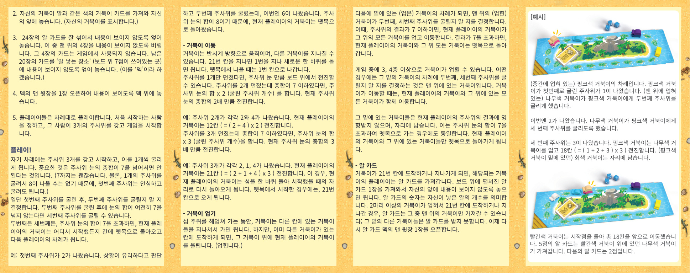

1背景
马埃是塞舌尔（塞舌尔，印度洋西部的 92 岛共和国，首都：维多利亚 Victoria）中一座岛屿的名字。该岛风光秀丽，深受游客喜爱，同时也以乌龟产卵地闻名于世。
本桌游 马埃 便是以岛上的乌龟赛跑为题材：每只乌龟绕岛而行，有时骑上其他乌龟的背，有时则被他人骑。当乌龟们绕过岛屿、到达或经过 21 号格时，便按「蛋卡（알 카드）」牌堆最上面那张卡片所示的数字产下相应数量的蛋。当所有蛋卡都用完时，进入最后一轮，玩家们有机会一下子夺得 7 枚蛋，最后蛋卡分数最高的玩家获胜。
2游戏目标
让你的乌龟绕岛跑起来，多多收集蛋卡，积累最多蛋分。
3配件
1 张岛形赛道的游戏板
3 颗骰子
7 只乌龟棋子
7 张乌龟卡
1–6 分不等的蛋卡 24 张
4准备
- 每位玩家各选 1 只乌龟棋子，放在游戏板上的「筏子（뗏목）」处。
筏子在 1 号格的前面。 - 每位玩家拿 1 张与自己乌龟棋子同色的「乌龟卡」，放在自己面前（用于标记属于你的乌龟）。
- 将 24 张蛋卡充分洗混，面朝下成一摞。丢弃最上面 4 张面朝下的卡（这 4 张在游戏中不使用）。将剩余 20 张蛋卡面朝下放在游戏板上「产卵地（알 낳는 곳）」（即7 分所在的位置）。这一摞称为「蛋堆（떡）」。
- 翻开蛋堆最上面 1 张蛋卡，面朝上放在蛋堆上方。
- 玩家们轮流进行。任意指定起始玩家，由该玩家拿 3 颗骰子开始游戏。
5游戏流程
每位玩家的回合握有 3 颗骰子，一次掷 1 颗。关键规则是：骰子点数之和不得超过 7（点数和为 7 还行）。
掷骰流程
- 掷第一颗骰子。点数天然不超 7，可放心掷。
- 视情况决定要不要掷第二颗。若掷了，两颗的点数之和仍不超过 7，可以继续掷第三颗。
- 掷第二颗或第三颗时，如果点数和超过 7：
—— 你当前回合控制的乌龟（连同其上所有乌龟）无论从哪一格出发，立刻回到筏子上，回合结束，由下一位玩家开始。
【示例】第一颗骰子掷出 2，你判断局势有利，于是掷了第二颗，掷出 6。两颗点数和为 8 超过 7，你本回合控制的乌龟立即被送回筏子。
6乌龟移动
乌龟沿逆时针方向移动，可以路过其他乌龟所占的格。但若到达的那一格已经有一只乌龟，你的乌龟就要骑到那只乌龟背上（详见 §7 叠骑）。
走过 21 号格之后，会路过 1 号格继续新的一圈；从筏子离开时，是从 1 号格出发。
前进格数
掷完骰子后，根据掷出的骰子数量，前进格数计算如下：
- 掷 1 颗：前进 点数和 × 1（即该骰点数）。
- 掷 2 颗（点数和 ≤ 7）：前进 点数和 × 2。
- 掷 3 颗（点数和 ≤ 7）：前进 点数和 × 3。
【示例 2 颗】两颗骰子掷出 2 与 4。点数和为 6，乘以 2：你的乌龟前进 12 格（(2+4) × 2）。
【示例 3 颗】三颗骰子掷出 2、1、4。点数和为 7，乘以 3：你的乌龟前进 21 格（(2+1+4) × 3）。这一次刚好绕岛一圈回到起点位置；如果是从筏子出发，则刚好到达 21 号格。
7乌龟叠骑
绕岛游泳的过程中，乌龟可以路过其他乌龟所在的格。但是当你要抵达的格子上已经有另一只乌龟时，你的乌龟就要叠到它背上（骑乘）。
【详细示例】场上有一只灰色乌龟在底，木色乌龟叠在灰色上，粉色乌龟又叠在最上面。现在是粉色乌龟的回合。
粉色乌龟掷第一颗骰子：1。位于最上方的粉色乌龟决定掷第二颗骰子：2。再决定掷第三颗：3。点数和为 6，乘以 3：粉色乌龟叠着整个塔（含木色与灰色）一起前进 18 格（(1+2+3) × 3）。
8乌龟塔（多人叠骑规则）
接下来轮到被压在下方（被骑）的乌龟回合时，由位于最上方的乌龟（玩家）决定要否掷第二颗、第三颗骰子：
- 若点数和 ≤ 7：当前玩家的乌龟连同其上的所有乌龟一起前进。
- 若点数和 > 7：当前玩家的乌龟连同其上的所有乌龟一起被送回筏子。
游戏中可能出现 3、4 层甚至更多层的叠塔。无论如何，每只乌龟的回合中，是否掷第二 / 第三颗骰子都由位于最顶上的乌龟决定。一旦发生移动，当前玩家的乌龟及其上的所有乌龟一同移动。
被压在塔底部的乌龟们，不受当前玩家掷骰点数影响，原地不动。这一点即使在点数和超过 7 而整叠乌龟一起被送回筏子时也是如此——只有当前玩家的乌龟及其上方的乌龟回筏子。
9蛋卡
当你的乌龟到达或经过 21 号格时，从蛋堆中拿取 1 张面朝上的蛋卡，面朝下放在自己面前。卡上的数字即为你这一次产下的蛋数。
如果是整叠叠塔一起到达或经过 21 号格，蛋卡只能由最上面那只乌龟的玩家拿走，下面的其他乌龟拿不到蛋。
之后翻蛋堆最上面 1 张新的蛋卡面朝上，取代拿走的卡片。
107 分终局与计分
当蛋堆的最后一张蛋卡被拿走后，游戏板上的「产卵地」（原蛋堆位置）会显出 「7」。如果此时有乌龟单独或作为整叠叠塔最顶上的那只，到达或经过 21 号格，该乌龟即获得 7 分，游戏立即结束。
之后将各自蛋卡的点数加总，分数最高的玩家获胜。如果出现并列，则蛋卡张数多者获胜（产卵地的 7 分也算作 1 张蛋卡）。
11计分示例
游戏结束时：
- Martin 拿到 1、3、3、4、5、6 分的蛋卡 6 张，共 22 分。
- Eva 拿到 1、2、4、4、6 分的蛋卡 5 张，共 17 分。
- David 拿到 2、3、4、6 分的蛋卡 4 张，并从产卵地获得 7 分，共 22 分。
- Andrea 拿到 3、3、4、5、5 分的蛋卡 5 张，共 20 分。
并列处理：Martin 和 David 都是 22 分，并列。Martin 的蛋卡张数为 6，David 为 5 张（含产卵地 7 分算 1 张），Martin 多 1 张，因此 Martin 获胜。
122–3 人变体
当游戏为 2 或 3 人局时，每位玩家各拿 2 只乌龟进行游戏（否则乌龟叠骑与被叠的机会会大幅减少）。
自己的回合中，先对一只乌龟掷骰并移动，之后再轮到自己的下一只乌龟。但是，哪只乌龟先动应当事先约定好，游戏中固定不变。
无需为每只乌龟单独收集蛋卡——游戏结束时，把两只乌龟各自的蛋卡点数相加即可。
13变体：蛋卡代替骰子
在自己的回合中，不是掷骰子，而是可以用已经获得的蛋卡，即蛋卡的点数可以「代替」骰子的点数。但每次最多只能使用 1 张蛋卡，且只能用于代替第二颗或第三颗骰子的点数。不能用蛋卡代替第一颗骰子。
此情况下，骰子点数与蛋卡点数之和同样不得超过 7。
被这样使用掉的蛋卡会被弃掉，本局不再用，且游戏结束时不计入该玩家的蛋分。
【示例】当前玩家手中有一张 2 分 的蛋卡。本回合已掷出第一颗骰子 5。不再继续掷骰子，改用蛋卡代替第二颗骰子的点数：总点数为 5 + 2 = 7，乘以 2 = 14，于是前进 14 格（(5 + 2) × 2）。该 2 分蛋卡 即被弃掉，之后不计入玩家的蛋分总分。
多乌龟塔的蛋卡：在叠塔中，如果是中间层乌龟的回合，则最上层的乌龟可以让该中间层乌龟用其自己的蛋卡代替骰子。但不可强求中间层乌龟使用其蛋卡。

14制作信息
游戏设计（设计）：Alex Randolph
插画（插画）：Atlier198、Wanjin Gill
出版（出版）：基于 franjos Spieleverlag 与（주）게임올로지（Gameology Inc.）的授权合约制作
合作出版：franjos Spieleverlag · playte | www.franjos.de · www.playte.com
※ 本规则书的简体中文译本以 Gameology 与 franjos 联合发行的韩文版（韩文版 / 马埃 / 마헤）为权威源。
术语对照：乌龟（거북이, turtle）、筏子（뗏목, raft，失败时返回的起点区）、蛋卡（알 카드, egg card）、产卵地（알 낳는 곳, nest）、21 号格（21번 칸）。专有名词（游戏名「马埃 / 마헤」、岛屿名「塞舌尔 / Victoria」、人名、颜色、出版商）保留英文 / 韩文原文。